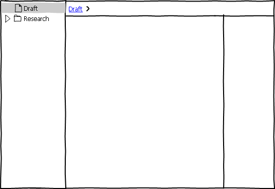
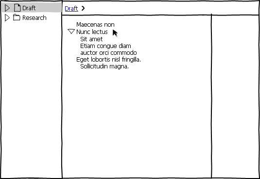
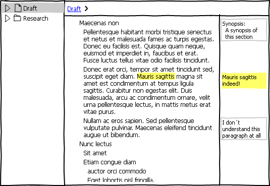
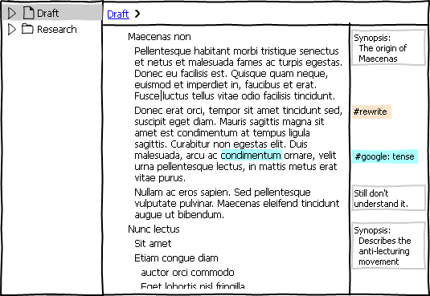
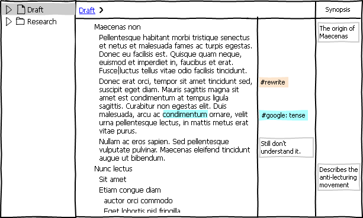

1 Introduction
TextSmith is an application for writing human text.
It gives you one way to write, annotate and organise your text – first, and a multitude of options for exporting and formatting – later.
2 Key Features
2.1 Items
The biggest difference between TextSmith and other software is that all word processors, text editors, writing software etc. treat a body of text as a long string of characters, using invisible newline characters to mark the end of each paragraph. Instead TextSmith treats the text as a hierarchical list, where each item in the list is either a heading or a paragraph. This has several benefits:
- It’s easier to rearrange the text. You can just click and drag to move headings and paragraphs around, instead of having to select the text of the paragraph first.
- Cleaner text. There are no invisible characters, except for single spaces. Since each paragraph is a separate item, there is no need for newline characters. And since this application separates between writing and layout/formatting there is no need for the tab character, several consecutive spaces or having spaces at the beginning or end of a paragraph. Which is why TextSmith simply does not allow them.
- It’s much easier to keep track of changes to the text, since the application only needs to track changes to the content of each paragraph, plus its position. This is much harder to do in a long string of text where different paragraps have been added, deleted, modified and moved around.
- Comparing different versions of the text is also much easier.
- You can easily add comments and other annotations to each individual paragraph. If you move the paragraph, they follow along.
- And you can still write and edit the text the way you’re used to. Pressing enter still makes a new paragraph, and pressing backspace at the beginning of a paragraph still joins it with the previous one.
It also makes the other key features of this application possible, or at least much simpler to use and implement.
2.2 History
The “undo” command seen in most applications nowadays is indispensable, but it is strictly linear – if you make changes to the beginning of the document, and then make changes to the end of the document, and want to undo the changes at the beginning you also have to undo the changes at the end. So instead of just keeping the history of the project as a whole, TextSmith keeps the history of each and every heading and paragraph. You can undo changes to just one part of the document, leaving the rest of the project alone.
Most importantly this enables you to go crazy and make changes that almost certainly will not work. To go forth and edit. To boldly write what no one has written before. Because you know you can easily get your text back to its previous state.
To stay on top of all this history you can use snapshots. If you’re about to embark on some serious rewriting and want to be able to easily get back to the current version, you can press Command-S and enter a title. Later on when you realise this is just not working you can go through the history, locate your title, restore, and everything is fine again.
2.3 Multiple versions
If you can’t quite decide what to do with some paragraphs or an entire section, you can create different versions of them. Then you can view them side-by-side and edit them simultaneously, choose one version for now while having the others easily available should you change your mind. You can have as many different versions of each paragraph as you want. This is particularly useful for multilingual documents where each version can be in a different language. When reorganising them you can move sections, headings and paragraphs around in all languages simultaneously.
2.4 Plug-ins
TextSmith can be used to create any type of human text. That means it needs a lot of functionality and the ability to export to an absolutely ridiculous amount of formats and file types. This can easily lead to a lot of clutter and menus longer than your arm. Which is why TextSmith achieves as much functionality as possible through plug-ins.
With them you can import, export, synchronise, search, replace, filter, transform, translate, look up words in the thesaurus, analyse your writing etc etc. And you can search for, find, get for free/buy and install plug-ins right from inside TextSmith. This way you get exactly the functionality you need and none of the functionality you don’t. This also spares people who don’t know what laTex is from wondering what a fabric is doing in their writing software and why is the capitalisation so weird?
2.5 Annotations
Proper annotating is essential when working in TextSmith. You can mark headers, paragraphs and any portion of the text - down to single words - with tags. Then you can view only the parts of the text with specific tags or combinations thereof, and when it comes time to export your work you can format the text based on the tags.
3 The Basics
At its core, TextSmith is basically an advanced outliner. Without any plug-ins it can still be used as a powerful outliner and text editor. To use TextSmith in its most basic form, create a new project and select the “blank” template.
 'draft'.">
In the source list to the left there is a “draft” item with a text icon. This is a text item, the core building block that everything else relies upon. Text items are either headings, which can contain other items, or paragraphs, which obviously cannot. Only headings show up in the source list.
There is also a “Research” folder in the source list. As all folders this can contain anything. Folders are purely for the benefit of the author and are not included in the final output. For instance in screenplays you can group scenes into folders named Act 1, 2 and 3, and the names of these folders won’t show when you print the screenplay.
3.1 Outlining

When writing it can often be helpful to outline your thoughts first. Select “Draft” in the source list and start typing. Press enter to create a new item, press Tab to indent the current item and press Shift Tab to outdent it.
The disclosure triangle is visible whenever the pointer is over a heading. You can use it to show or hide everything under that heading, and to move it around. When the pointer is over a paragraph a bullet point shows up instead.
If you select several items with the mouse, check-boxes appear in front of all the headers and paragraphs. This way you can make non-consecutive selections using just the mouse.
3.2 Annotating

While writing you may want to add some comments to the different parts of your document. Double click in the right margin (or press Control-Tab) and start typing to create a new comment. A comment is a text item and can contain anything the rest of the document can, i.e. headings, paragraphs, images etc. So to create a synopsis of a section (i.e. a heading and all the items it contains), double-click to the right of the heading, write “Synopsis:”, press enter and tab, and write the synopsis itself.
What part of the document a new comment applies to depends on several things:
- If some text was selected, the comment applies to that text only. The selected text is marked with a yellow background.
- In a paragraph, if no text was selected the comment applies to the entire paragraph.
- In a heading, if no text was selected the comment applies to the entire section.

You can use tags to mark different parts of the text for follow up later on. There might be some factoid you need to investigate further or a sentence that needs to be rewritten. Tags are created the same way as comments, except they start with a “#”. So select the factoid or sentence, press Control-Tab or double-click in the right margin, and write e.g.”#google” or “#rewrite”. Or click the “Add Tag”-button in the toolbar. If no text is selected the entire paragraph or header is tagged.
You can also provide additional information in a tag. For instance the exact phrase you should Google, like “#google: best outliner”. Or if you’re working on a story that leaps back and forth in time you can tag each scene with its date, e.g. “#date: 12/04/2002”. Later you can sort all of the scenes by date to see if you've got the chronology right.
Tags are particularly useful for marking text that should be formatted in a particular way. So if you want a paragraph to end up in a box titled “Note:”, you can mark it “#note” and then format all paragraphs marked “#note” accordingly when exporting.
3.3 Viewing

After some extensive writing and annotating the right margin can get pretty crowded, so lets clean it up a little. Drag one of the comments titled “Synopsis” to the right and let go when you see the outline of a column. A new column appears, and all the synopses are moved to it. You can do the same with any of the tags, and different tags and types of comments can share the same column.
To create a new column from scratch, double-click to the right of the rightmost column, enter the title and press enter. If you want to reuse a type of column you've created before, instead of entering the title you can click the down arrow to the right of the empty title, which displays a list of your most commonly used columns. It also contains the predefined columns “Status”, which can contain values like “outlined”, “first draft”, “revised”, “done” etc, and “To-do”, where each item has a checkbox in front of it.
Use the columns to get an overview of the text. Click the title of a column to sort by that column. Click again to sort the other way. Or right click the title of the “Status” column, go to the “filter” submenu and select “outlined” and “first draft” to show only those items. If you want to show all items that have been annotated, you can right click in the right margin, go to the “filter” submenu and select both “all tags” and “all comments”.
3.4 Editing and Versioning
When it’s time to go through the document and clean it up you can right click on one of the #rewrite tags in the right margin and select “filter on this tag”. Now only the items with this tag are displayed. So if an entire heading (as opposed to part of the text in it) has this tag it and all its contents is displayed. When you have rewritten an item you can remove the #rewrite tag next to it and the item disappears from view.
While editing you can feel free to go crazy and try out stuff just to see if it will work, because at any time you can go back to a previous version of the text. In addition to the standard undo-command, you can click the “Versions” icon in the toolbar and a list of previous versions of the current paragraph appears to the right of it. As you move the cursor over each paragraph in the list, the differences between it and the current paragraph are highlighted right in the current paragraph. Deleted text is marked with strike-through, and added text is in green. Double-clicking a paragraph in the list replaces the current paragraph with it.
If there is a version in the list you quite like, but you're not sure if you want to use, you can click the star which appears when the mouse cursor is over it. This marks it as an alternate version of the current paragraph, and moves it kind of under it. Even after you close the versions list and view the document as normal, paragraphs with alternate versions have what seems to be stacks of paragraphs under them. Clicking this stack displays the various alternate versions, and you can select any of these to replace the current version.
Finding a specific version in that ever-growing list can become difficult fast, so if you've just written something terribly clever you can hit Command-S, which makes a snapshot of the current version of the entire project with the name set to the current date and time. Or you can hit Command-Shift-S and give it your own name. It shows up in the list of versions for every item in the project.
3.5 Exporting
Finally, after all that writing and editing, it is time to export your text and get it into the hands of some readers. To export to a new format, click the “Export” button in the toolbar and select a format. If your desired format is not in the list, you can check if it is available for download. Developers can easily create export plug-ins for various formats and make them available for download right in the application.
The most common formats are:
RTF, Word, OpenOffice, Pages, etc
If you want to do the layout and formatting manually, you can export to a word processor. Select the document type from a list of templates or create your own. In the latter case, create the document first in your word processor with all the styles you are going to use. Then in TextSmith select which styles to use for the different levels of headings, and which ones to use for paragraphs and text marked with different tags. After the export you can fine tune the styles, layout, margins etc in your word processor of choice. If you make changes to the text in TextSmith afterwards you can just export again and it will update the text in the document, leaving changes to the styles and layout intact.
PDF/Print
Here you can select the type of document, add a front page, set footer and header, margins etc. and set font, size, etc for each header and tag.
HTML
You can do the same with HTML, i.e. set header level and CSS class for all the headers and tags in your project. Or control exactly what HTML code is generated for each header level or tag.
4 Conclusion
So that is TextSmith. Let me know what you think in the comments below or to kare@nottoobadsoftware.com .
Suggestions for a better name are especially welcome.

Introduction to TextSmith by Kåre Morstøl is licensed under a Creative Commons Attribution-NonCommercial-NoDerivs 3.0 Unported License.